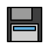

Cultura DevOps & o Framework CAMS
Antes do primeiro comando, o mais importante: DevOps não é uma ferramenta que você instala: é uma cultura que você pratica. Aqui começa a viagem, Grumete.

Foto: Peter Thomas em Unsplash

Bem-vindo a bordo! Antes de tocar em qualquer terminal, você precisa entender uma coisa: eu não sou capitão de um navio de código. Sou capitão de uma tripulação. E tripulação boa não tem "time de Dev" brigando com "time de Ops": todo mundo rema pro mesmo lado.
O que DevOps NÃO é
É tentador pensar em DevOps como "aquele conjunto de ferramentas": Docker, Kubernetes, Jenkins, AWS. Mas o material oficial é categórico: DevOps não é um framework, uma ferramenta específica, um produto único ou uma tecnologia isolada. É, fundamentalmente, uma cultura: uma combinação de filosofias, práticas e ferramentas que aumenta a capacidade de uma organização de entregar aplicações com velocidade e qualidade, encurtando o ciclo de vida do desenvolvimento de software.
Os pilares obrigatórios
Não existe DevOps de verdade sem esses seis pilares funcionando juntos:
- Colaboração real entre times de Dev e Ops: nada de "joga por cima do muro".
- CI/CD: Integração Contínua e Entrega Contínua.
- Desenvolvimento ágil e ciclos de entrega rápidos.
- SCM: Gerenciamento de Configuração de Software (versionamento).
- Infraestrutura escalável e automatizada.
- Centralização de logs e monitoramento contínuo de dados e métricas.
 CAMS: as 4 letras que sustentam o navio
CAMS: as 4 letras que sustentam o navio
Criado por Damon Edwards e John Willis, o framework CAMS resume a cultura de empatia que o DevOps exige. É o mapa que todo capitão deveria pendurar na cabine:
| Pilar | Objetivo |
|---|---|
| Culture (Cultura) | Destruir silos; times se envolvem cedo e com frequência; interação é prioridade. |
| Automation (Automação) | Automatizar o máximo possível, da concepção à remoção de gargalos. |
| Measurement (Medição) | Coletar dados e métricas pra criar loops de feedback em todas as fases. |
| Sharing (Compartilhamento) | Pessoas cooperam e colaboram por um objetivo comum, sem esconder conhecimento. |
 Silos: o inimigo número 1
Silos: o inimigo número 1
Silos são times ou departamentos isolados: o time de Dev que só entrega código "pronto" e o time de Ops que descobre problemas de infraestrutura só em produção, cada um numa ilha própria. O DevOps existe justamente pra destruir essa separação. Quando os silos caem, ninguém mais consegue dizer "não é meu problema": o navio inteiro afunda ou flutua junto.
 Valores de bordo (Cultura Germinare)
Valores de bordo (Cultura Germinare)
Além do CAMS, toda tripulação séria segue valores de comportamento. Os sete valores centrais que orientam como a equipe trabalha em conjunto:
E os comportamentos de risco: aqueles que nenhuma tripulação tolera: copiar atividades de outra pessoa, colar (plágio) em avaliações, e não participar de atividades em grupo. Isso vale tanto numa sala de aula quanto num time de produção.
Toque nas letras na ordem certa pra reconstruir o termo.
Git: Controle de Versão Distribuído
Todo commit é uma âncora lançada no fundo do mar: se algo der errado lá na frente, você sempre pode voltar pra ela.

Foto: Nastia Petruk em Unsplash

Miau! Eu vivo dentro de repositórios. Cada vez que você digita git add e git commit, uma das minhas patinhas fica feliz. Bora aprender a versionar código igual gente grande?
 O que é o Git
O que é o Git
O Git é um sistema de controle de versão distribuído e de alta performance, usado pra registrar e gerenciar mudanças em projetos de software. Diferente de sistemas centralizados antigos, cada máquina com um clone do repositório tem o histórico completo do projeto: não existe um único ponto de falha.
 O Repositório e a Staging Area
O Repositório e a Staging Area
Um repositório é iniciado com git init, que cria uma pasta oculta .git: é ali que mora todo o histórico de versões do projeto. Entre "editei o arquivo" e "registrei essa mudança pra sempre" existe uma parada intermediária: a Staging Area (também chamada de index). É o convés onde a carga fica organizada antes de ser oficialmente despachada com um commit.
Commits: as âncoras da sua história
Um commit funciona como um checkpoint, um marco na história do projeto. Toda vez que você faz um commit, está dizendo: "esse é um estado que eu confio, posso voltar pra ele depois". Por isso commits devem ter mensagens curtas e explicativas: pense nelas como o diário de bordo do seu navio.
Comandos essenciais
| Comando | Ação |
|---|---|
git init |
Inicializa um repositório Git local. |
git add . |
Adiciona todos os arquivos modificados à staging area. |
git commit -m "msg" |
Registra as mudanças no histórico do repositório. |
git log |
Mostra o histórico de commits, autores e datas. |
git clone |
Copia um repositório remoto pra um diretório local. |
git push |
Envia mudanças locais pro repositório remoto (GitHub). |
git pull |
Traz mudanças do repositório remoto pro seu local. |
 Branches: navegando em paralelo
Branches: navegando em paralelo
Uma branch (ramificação) permite desenvolver uma funcionalidade isoladamente, sem bagunçar o código principal: como um bote separado explorando uma rota alternativa. Você cria uma com git checkout -b nome-da-feature. Quando a exploração dá certo, você faz o merge: integra as mudanças da branch de volta na branch principal (main ou master). Se duas branches mudaram a mesma linha do mesmo jeito diferente, o Git não adivinha sozinho: ele avisa um conflito e espera você decidir manualmente qual versão vale.
git init
git commit -m "primeira versão"
git add .A ordem dos comandos está errada: qual é a sequência correta pra registrar uma mudança pela primeira vez?
Responda antes que o tempo acabe!
GitHub: Colaboração & Pull Requests
Git guarda a história. GitHub é o porto onde a tripulação inteira se encontra pra revisar a carga antes de içar ela pro navio principal.

Foto: Emma Swoboda em Unsplash
Aqui é onde a mágica social acontece! Hospedar repositório é só o começo: code review, Pull Requests e Actions é onde o time inteiro trabalha junto de verdade.
 O que é o GitHub
O que é o GitHub
O GitHub é uma plataforma web que hospeda repositórios Git e facilita a interação da equipe: hospedagem de repositório, gerenciamento de projetos, revisão de código e até uma camada de rede social pra programadores. Ele também se integra com integração contínua, rodando testes e verificações automáticas assim que um novo código sobe.
Pull Request: mais que um envio de código
Um Pull Request (PR) não é só "mandei o código". É um pedido de aprovação: uma narrativa das mudanças feitas, esperando revisão de pares antes de qualquer coisa ser integrada de verdade.
- Revisão: colegas comentam linha a linha na aba "Files changed".
- Iteração: você pode adicionar novos commits à mesma branch: o PR se atualiza automaticamente, sem precisar abrir um novo.
- Conclusão: uma vez aprovado, o botão "Merge pull request" integra o código de vez na branch principal.
 Por que revisão de código importa
Por que revisão de código importa
Trocar código sem revisão é como um marinheiro içar a vela sozinho, no escuro, sem avisar ninguém. Um PR bem escrito (com título claro, descrição do que mudou e por quê) economiza o tempo de todo mundo e evita que bugs silenciosos cheguem em produção. Revisão de código não é burocracia: é o mecanismo de compartilhamento (o "S" do CAMS) em ação.
Vocabulário rápido
Merge: combinar mudanças de uma branch (ex: uma feature) em outra (ex: main).
Silos: times isolados que o DevOps busca destruir pra melhorar comunicação e velocidade.
Staging Area: terreno intermediário onde arquivos são organizados antes de um commit final.
# Alguém revisou seu PR e pediu uma mudança.
# Você decide então fechar o PR e abrir um novo do zero
# com o ajuste, ao invés de só commitar de novo na mesma branch.Isso é o fluxo de trabalho correto num Pull Request?
Escolha rápido antes que o cronômetro zere!
Infraestrutura como Código (IaC)
Em vez de configurar servidor por servidor à mão, você escreve um mapa: e qualquer marinheiro consegue reconstruir o navio inteiro só de ler o mapa.

Foto: Nastia Petruk em Unsplash
Um bom capitão nunca confia na memória pra reconstruir o navio. Ele escreve tudo num mapa (arquivo de configuração): e qualquer tripulante, em qualquer porto, consegue montar tudo de novo do zero, do mesmo jeitinho.
 O que é Infraestrutura como Código
O que é Infraestrutura como Código
IaC (Infrastructure as Code) é a prática de definir e provisionar infraestrutura (servidores, redes, ambientes inteiros) através de arquivos de configuração versionáveis, em vez de configuração manual clique-a-clique. O resultado direto: ambientes reproduzíveis, documentados e fáceis de recriar em qualquer máquina ou qualquer nuvem.
 Virtualização completa vs. isolamento de processos
Virtualização completa vs. isolamento de processos
Existem duas grandes escolas de "empacotar" um ambiente:
| Abordagem | Como funciona | Custo |
|---|---|---|
| Máquinas Virtuais (ex: Vagrant) | Virtualização completa: cada VM roda seu próprio Sistema Operacional Convidado inteiro, sobre um hypervisor. | Alto: consome muita memória, disco e CPU. |
| Containers (ex: Docker) | Isolamento de processos sobre o Kernel do sistema hospedeiro: sem carregar um SO inteiro por aplicação. | Baixo: leve, rápido pra iniciar, altamente eficiente. |
Essa diferença é a razão pela qual o mundo migrou de VMs pesadas pra containers ágeis nos últimos anos: mesma ideia de isolamento, com muito menos peso morto.
 O modelo declarativo
O modelo declarativo
A grande virada de chave da IaC (e depois do Kubernetes, que você vai ver mais pra frente) é o modelo declarativo: você não dá ordens passo a passo ("suba esse servidor", "instale essa lib", "abra essa porta"). Você escreve, num arquivo, como deseja que o ambiente esteja: e a ferramenta se vira pra fazer acontecer, e pra manter esse estado com o tempo.
# Time decide: "vamos rodar essa API em produção
# usando uma Máquina Virtual completa, porque é
# mais leve e rápida de subir que um container."Essa afirmação sobre VM vs. container está correta?
Docker: Imagens & Containers
Contêineres de verdade carregam caixas. Contêineres Docker carregam aplicações inteiras: isoladas, leves e idênticas em qualquer porto onde atracarem.

Foto: Sora Sagano em Unsplash
Ahoy! Esse aqui é o meu terreno favorito. O Docker é o que transformou minha frota de um punhado de barcos artesanais numa operação de containers padronizados: cada aplicação no seu próprio compartimento, sem bagunçar o vizinho.
O que é o Docker
O Docker é uma plataforma open source que permite empacotar, executar, testar e implantar aplicações em ambientes isolados chamados containers. Ele garante que sua aplicação funcione de forma idêntica e consistente, não importa em qual computador ou servidor esteja rodando: resolvendo pra sempre o clássico "na minha máquina funciona".
 O trio fundamental
O trio fundamental
Pra dominar o fluxo de trabalho do Docker, você precisa entender três conceitos que se encaixam como peças de engrenagem:
- Dockerfile: o "livro de receitas". Um script de texto com instruções linha a linha de como construir a imagem: qual sistema operacional base usar, quais pacotes instalar, quais portas expor.
- Imagem: o "molde" imutável e somente-leitura, gerado a partir do Dockerfile. Contém código, runtimes, bibliotecas e dependências, tudo empacotado.
- Container: a instância ativa e em execução de uma imagem. Analogia de programação: se a imagem é a classe, o container é o objeto: a instância viva dessa classe.
 A arquitetura Cliente-Servidor do Docker
A arquitetura Cliente-Servidor do Docker
| Peça | Função |
|---|---|
| Client (Docker CLI) | A linha de comando onde você digita as instruções (docker run, docker build...). |
| REST API | A ponte de comunicação entre o Client e o Daemon. |
| Server (Docker Daemon) | O serviço em segundo plano que faz o trabalho pesado: cria, roda e gerencia containers e recursos. |
| Docker Registry (ex: Docker Hub) | Repositório centralizado onde imagens são publicadas, armazenadas e baixadas. |
Comandos essenciais do dia a dia
| Comando | Descrição |
|---|---|
docker pull <imagem> |
Baixa uma imagem do Docker Hub. |
docker run -d -p 8080:80 --name <nome> <imagem> |
Cria e inicia um container em segundo plano, mapeando portas. |
docker container ls (ou docker ps) |
Lista containers ativos. Some -a pra ver os parados também. |
docker stop <container> |
Para o container de forma gentil. |
docker kill <container> |
Força a parada imediata. |
docker rm <container> |
Remove um container (-f força se estiver rodando). |
docker images |
Lista todas as imagens locais. |
docker rmi <imagem> |
Remove uma imagem local. |
docker exec -it <container> /bin/bash |
Abre um terminal interativo dentro de um container ativo. |
docker logs -f <container> |
Mostra os logs do container em tempo real. |
docker build -t <nome_imagem> . |
Constrói uma imagem a partir de um Dockerfile no diretório atual. |
FROM node:20-alpine
EXPOSE 3000
WORKDIR /app
COPY package.json .
CMD ["node", "server.js"]
RUN npm installEsse Dockerfile tem um problema de ordem: qual instrução está fora de lugar e vai causar erro na build?
Dockerfile na Prática & Docker Compose
Uma imagem sozinha é um marujo solitário. Compose é como formar a tripulação inteira: vários containers remando juntos com um único comando.

Foto: Ingmar em Unsplash
Escrever um Dockerfile é escrever a receita do seu próprio marujo. E quando você tem vários marujos que precisam trabalhar juntos (um banco de dados, uma API, um cache) é hora de içar o Docker Compose.
 Anatomia de um Dockerfile
Anatomia de um Dockerfile
Um Dockerfile é lido de cima pra baixo, e cada linha vira uma "camada" da imagem final. Um exemplo simples de uma aplicação Node.js:
FROM node:20-alpine
WORKDIR /app
COPY package.json .
RUN npm install
COPY . .
EXPOSE 3000
CMD ["node", "server.js"]FROM define a imagem base. WORKDIR define a pasta de trabalho dentro do container. COPY traz arquivos do seu computador pra dentro da imagem. RUN executa comandos durante a construção da imagem (uma vez só). EXPOSE documenta qual porta a aplicação usa. CMD é o comando executado quando o container inicia: a diferença entre RUN e CMD é a pegadinha mais comum de prova.
Docker Compose: orquestrando vários containers
Quando sua aplicação precisa de mais de um container conversando entre si (por exemplo, uma API e um banco de dados) escrever docker run repetidas vezes, à mão, fica insustentável. O Docker Compose resolve isso com um único arquivo declarativo, o docker-compose.yml:
version: "3.9"
services:
api:
build: .
ports:
- "3000:3000"
depends_on:
- db
db:
image: postgres:16
environment:
POSTGRES_PASSWORD: exemplo
volumes:
- dados_db:/var/lib/postgresql/data
volumes:
dados_db:Com docker compose up, os dois containers sobem juntos, já conectados na mesma rede interna: a API consegue enxergar o banco pelo nome do serviço (db), sem precisar descobrir nenhum IP manualmente.

Volumes: dados que sobrevivem ao container
Containers são, por natureza, descartáveis: pare um, suba outro, tanto faz. Mas dados de banco de dados não podem sumir junto. Um volume é um espaço de armazenamento gerenciado pelo Docker, fora do ciclo de vida do container, que persiste mesmo se você remover e recriar o container inteiro.
services:
db:
image: postgres:16
environment:
POSTGRES_PASSWORD: exemplo
api:
build: .
ports:
- "3000:3000"Falta um detalhe importante nesse docker-compose.yml pra garantir que os dados do banco não se percam ao recriar o container. O que é?
Kubernetes: Pods, ReplicaSets & Deployments
Kubernetes significa "Timoneiro" em grego. Se o Docker constrói os marujos, o Kubernetes é quem comanda a frota inteira sem que você precise gritar ordem por ordem.
Foto: Peter Thomas em Unsplash
Um container sozinho no meio do oceano é frágil: se ele cair na água, não sabe voltar sozinho. Por isso todo bom capitão precisa de uma hierarquia de comando. Deixa eu te apresentar minha equipe.
Kubernetes: o Timoneiro dos containers
Kubernetes (também chamado K8S) é um orquestrador de containers de código aberto. A palavra vem do grego e significa "Timoneiro" ou "Piloto": é o mestre de uma embarcação gigante carregada de caixas (containers), decidindo onde cada uma vai, quantas cópias existem e o que fazer quando algo cai no mar.
 Conhecendo a hierarquia de comando
Conhecendo a hierarquia de comando
| Papel | Analogia | Função real |
|---|---|---|
| Pod | O Marujo | A menor unidade do Kubernetes. Uma "cabine" onde mora um (ou mais) container. Sozinho, é frágil: se cair, não volta sozinho. |
| ReplicaSet | O Guarda | Sua única missão é contar os marujos. Se você pediu 3 Pods e um sumiu, ele imediatamente "clona" outro pra manter o número exato. |
| Deployment | O Imediato | Gerencia o plano de navegação inteiro. Diz ao ReplicaSet quantas réplicas criar e como atualizar a aplicação sem parar de navegar (Rolling Updates). |
O manifesto YAML: seu mapa do tesouro
Assim como na IaC, o Kubernetes não recebe ordens passo a passo. Você escreve num arquivo YAML como deseja que o navio esteja, e o Kubernetes se vira pra fazer acontecer. Esse é um manifesto de Deployment típico:
apiVersion: apps/v1
kind: Deployment
metadata:
name: nginx-deployment
spec:
replicas: 3
selector:
matchLabels:
app: meu-app
template:
metadata:
labels:
app: meu-app
spec:
containers:
- name: nginx-marujo
image: nginx:latest
ports:
- containerPort: 80replicas: 3 diz "eu sempre quero 3 marujos vivos". selector e labels são a "etiqueta" que conecta o Deployment aos Pods certos. O resto descreve o container que vai rodar dentro de cada Pod.
O Laço de Reconciliação
A parte mais bonita do Kubernetes: se você matar um Pod na mão, o Kubernetes percebe que o estado real (2 marujos) está diferente do estado desejado (3 marujos) e age sozinho pra consertar: sem ninguém pedir. Esse ciclo automático de "observar e corrigir" se chama Laço de Reconciliação, e é o coração de tudo que o Kubernetes faz.
apiVersion: apps/v1
kind: Deployment
metadata:
name: nginx-deployment
spec:
replicas: three
...Tem um erro nesse manifesto YAML. Qual é?
Kubernetes na Prática: kubectl
Chega de teoria: pegue o talkie-walkie. É hora de dar ordens de verdade pro seu cluster.
Foto: Nastia Petruk em Unsplash
A ferramenta kubectl é o meio pelo qual você dá ordens ao navio. Sem ela, você só tem um mapa bonito guardado na gaveta. Bora navegar de verdade.
 Habilitando o cluster local
Habilitando o cluster local
No Docker Desktop, é possível habilitar um cluster de nó único direto na sua máquina: abra Settings → seção Kubernetes → marque Enable Kubernetes → aplique e aguarde o status ficar "Running". Isso cria um cluster local pra testes e aulas: em produção você teria vários nós (marinheiros), mas aqui você é o capitão e o único marinheiro ao mesmo tempo.
Verificando o navio
| Comando | O que faz |
|---|---|
kubectl config current-context |
Mostra qual cluster o kubectl está usando agora. Confirma que você está apontando pro cluster certo. |
kubectl get nodes |
Lista os nós (máquinas) do cluster. No Docker Desktop, normalmente aparece um único nó. |
kubectl cluster-info |
Exibe informações básicas do cluster, como o endereço da API: confirma que o cluster está acessível. |
 Lançando seu plano ao mar
Lançando seu plano ao mar
| Comando | O que faz |
|---|---|
kubectl apply -f meu-navio.yaml |
Envia sua declaração YAML pro "cérebro" do Kubernetes. |
kubectl get pods |
Lista os Pods no namespace atual, com nome, status e reinícios. |
kubectl get rs |
Mostra o ReplicaSet garantindo que a quantidade de Pods está correta. |
kubectl describe pod <nome> |
Mostra detalhes completos do Pod: imagem, portas, eventos. Ótimo pra diagnosticar problemas. |
kubectl delete pod <nome> |
Mata um Pod manualmente: pra ver a mágica da reconciliação acontecer. |
kubectl delete -f meu-navio.yaml |
Recolhe o navio inteiro: remove tudo que o manifesto criou. |
 O Desafio do Capitão: teste de resiliência
O Desafio do Capitão: teste de resiliência
Quer ver por que o Kubernetes é incrível? Depois de aplicar um Deployment com 3 réplicas, mate um dos Pods com kubectl delete pod <nome> e digite rapidamente kubectl get pods. Você vai ver que, enquanto um Pod está sendo jogado fora, outro já nasceu instantaneamente no lugar dele: o Laço de Reconciliação percebeu a diferença entre estado real e desejado e agiu sozinho pra consertar.
# Você quer inspecionar por que um Pod está travado
# em "Pending" e roda:
kubectl get nodesEsse comando ajuda a diagnosticar por que um Pod específico está com problema?
AWS: Fundamentos de Computação em Nuvem
Se o Kubernetes comanda a frota, a AWS é o próprio oceano: a infraestrutura infinita onde tudo isso realmente navega.
Foto: Emma Swoboda em Unsplash

Olá, navegante das estrelas!  Enquanto o Capitão cuida dos containers, eu cuido da nuvem que sustenta tudo: servidores, armazenamento, bancos de dados e muito mais, sem você precisar comprar um único cabo de rede.
Enquanto o Capitão cuida dos containers, eu cuido da nuvem que sustenta tudo: servidores, armazenamento, bancos de dados e muito mais, sem você precisar comprar um único cabo de rede.
 O que é computação em nuvem
O que é computação em nuvem
Cloud computing é o fornecimento de recursos de TI (servidores, armazenamento, banco de dados, redes) sob demanda, pela internet, com pagamento conforme o uso (pay-as-you-go). Em vez de comprar e manter servidores físicos num data center próprio, você "aluga" capacidade computacional de um provedor como a AWS (Amazon Web Services) e escala pra cima ou pra baixo conforme a necessidade real.
Os serviços fundamentais da AWS
| Serviço | Categoria | Pra que serve |
|---|---|---|
| EC2 (Elastic Compute Cloud) | Computação | Servidores virtuais sob demanda: a "máquina" onde sua aplicação roda. |
| S3 (Simple Storage Service) | Armazenamento | Armazenamento de objetos (arquivos, imagens, backups) altamente durável. |
| IAM (Identity and Access Management) | Segurança | Controla quem pode acessar o quê: usuários, papéis (roles) e permissões. |
| Lambda | Serverless | Executa código sob demanda, sem você gerenciar nenhum servidor: paga só pelo tempo de execução. |
| RDS (Relational Database Service) | Banco de dados | Bancos relacionais gerenciados (PostgreSQL, MySQL...), com backups automáticos. |
| VPC (Virtual Private Cloud) | Rede | Sua própria rede isolada dentro da nuvem da AWS, com sub-redes e regras de firewall. |
| EKS (Elastic Kubernetes Service) | Orquestração | Kubernetes gerenciado pela AWS: o mesmo Kubernetes que você aprendeu, só que rodando na escala de um provedor de nuvem. |
 IAM: o guarda-costas da conta
IAM: o guarda-costas da conta
O princípio do menor privilégio é a regra de ouro em qualquer conta de nuvem: cada usuário ou serviço deve ter apenas as permissões estritamente necessárias pro seu trabalho: nunca mais que isso. Dar permissão de administrador total "porque é mais fácil" é uma das causas mais comuns de incidentes de segurança em nuvem. No IAM, você define roles (papéis) com políticas específicas, em vez de compartilhar credenciais poderosas por aí.
Elasticidade e o modelo de custo
A grande promessa da nuvem é a elasticidade: seus recursos crescem quando a demanda cresce (mais visitantes, mais processamento) e encolhem quando ela cai: automaticamente, sem alguém correndo pra comprar um servidor novo às 3 da manhã. Isso exige, em troca, disciplina de monitoramento: recursos esquecidos ligados custam dinheiro real, todo mês, mesmo sem uso.
# Pra facilitar, o time decide dar
# permissão de Administrador total (root)
# pra todo mundo no IAM, "porque é mais rápido".Essa prática segue o princípio do menor privilégio?
CI/CD & Projeto Prático
A última peça do quebra-cabeça: conectar tudo que você aprendeu num fluxo automático, do commit até a produção.
Foto: Nastia Petruk em Unsplash
Aqui a frota inteira trabalha em conjunto: código sobe, testes rodam sozinhos, imagem é construída, container sobe no cluster. É a diferença entre remar cada trecho na mão e ter um motor automático cuidando da rota.
CI/CD: o fluxo automático
Integração Contínua (CI) é a prática de integrar código de vários desenvolvedores num repositório compartilhado, várias vezes ao dia, com testes automáticos rodando a cada integração pra pegar erros cedo. Entrega/Implantação Contínua (CD) vai além: garante que esse código validado esteja sempre pronto (ou já publicado) pra produção, de forma automática e segura.
Um pipeline típico, de ponta a ponta
- Push: o desenvolvedor sobe código numa branch e abre um Pull Request no GitHub.
- Build & Test: uma pipeline de CI roda automaticamente: instala dependências, roda testes automatizados.
- Code Review: colegas revisam o PR, comentam, pedem ajustes.
- Merge: aprovado, o código entra na branch principal.
- Build da imagem: um
docker buildgera uma nova imagem versionada e publica no registry. - Deploy: o Kubernetes aplica o novo manifesto (
kubectl apply), fazendo um Rolling Update sem downtime. - Monitoramento: métricas e logs confirmam que tudo subiu bem (o "M" do CAMS, de novo).
 Sua primeira frota completa
Sua primeira frota completa
Construa e suba, do zero, uma aplicação simples (uma API "Hello DevOps" em Node, Python ou o que preferir) seguindo a rota inteira: (1) crie o repositório e faça o primeiro commit; (2) escreva um Dockerfile e construa a imagem; (3) escreva um docker-compose.yml conectando sua API a um banco de dados; (4) escreva um manifesto de Deployment do Kubernetes com replicas: 3 e aplique no cluster local do Docker Desktop; (5) mate um Pod na mão e documente (com print) o Laço de Reconciliação em ação. Bônus: escreva no README quais permissões IAM mínimas essa aplicação precisaria numa AWS de verdade.
Coloque as etapas do pipeline na ordem certa, do commit ao deploy.
Revisão Geral: Bem-vindo à Tripulação
Parabéns, Capitão! Você acaba de realizar sua primeira navegação completa em águas nativas de nuvem.
Foto: Sora Sagano em Unsplash
Olha só o quanto você navegou: cultura, Git, GitHub, IaC, Docker, Kubernetes, AWS. Agora é hora de revisar tudo, colecionar suas conquistas e, principalmente, continuar praticando. Nenhum capitão bom para de aprender no primeiro porto.
O mapa completo da viagem
| Módulo | O que você levou pra casa |
|---|---|
| 01: Cultura & CAMS | DevOps é cultura, não ferramenta. Culture, Automation, Measurement, Sharing. |
| 02: Git | Repositório, staging area, commits, branches e merges. |
| 03: GitHub | Pull Requests, code review, colaboração em equipe. |
| 04: IaC | Infraestrutura declarativa, VMs vs. containers. |
| 05: Docker | Dockerfile, imagem, container: a arquitetura cliente-servidor. |
| 06: Compose | Múltiplos containers, volumes persistentes, redes internas. |
| 07: Kubernetes (conceitos) | Pod, ReplicaSet, Deployment, manifesto YAML, Laço de Reconciliação. |
| 08: kubectl na prática | Comandos reais pra rodar, inspecionar e derrubar um cluster local. |
| 09: AWS | EC2, S3, IAM, Lambda, RDS, VPC, EKS: o oceano onde tudo isso navega de verdade. |
| 10: CI/CD | O pipeline inteiro, do commit ao deploy automático em produção. |
Conquistas
Desbloqueadas conforme você avança.
O Capitão Baba Grogue e o Octocat discutem DevOps no convés. Escolha quem está certo.